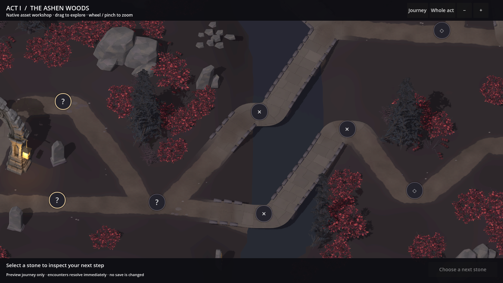
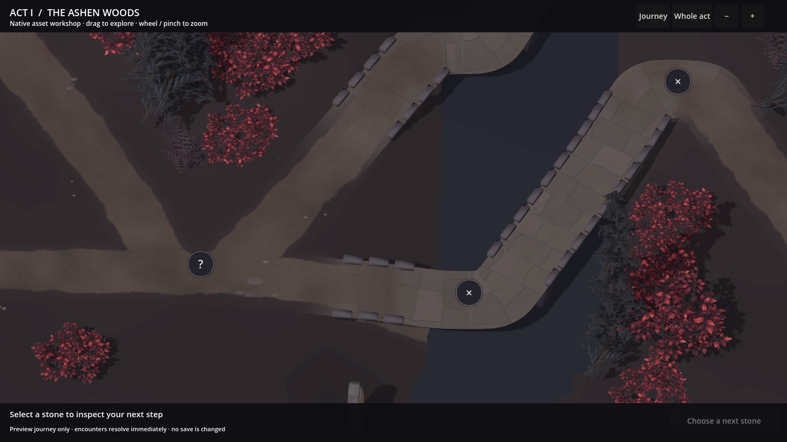
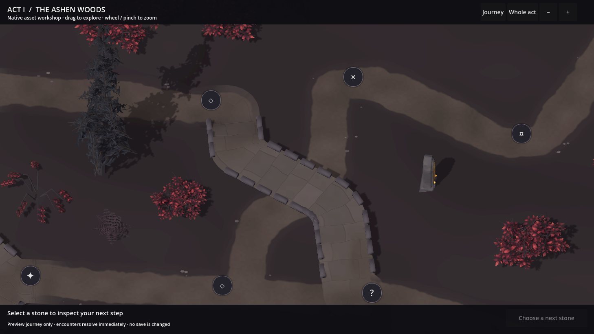
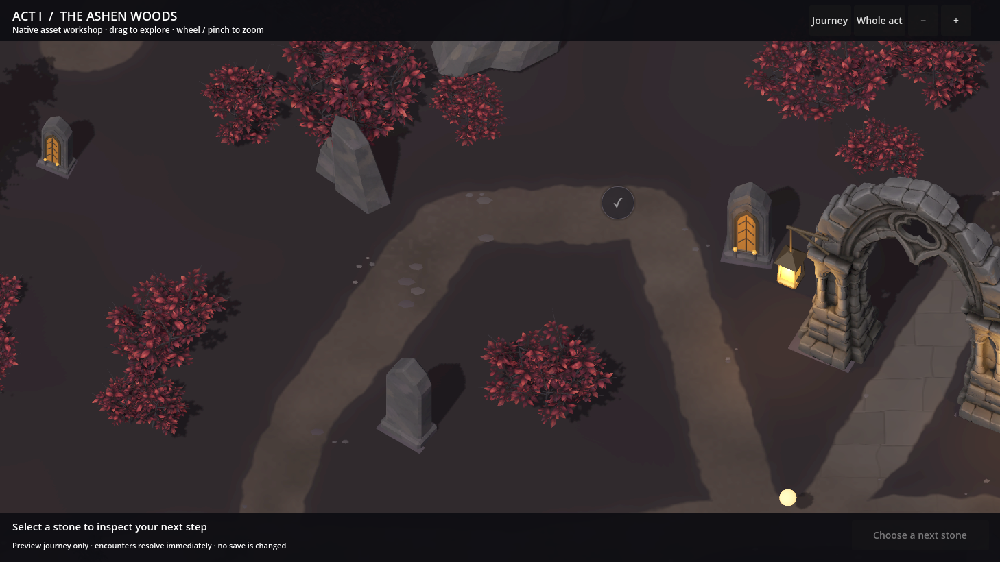
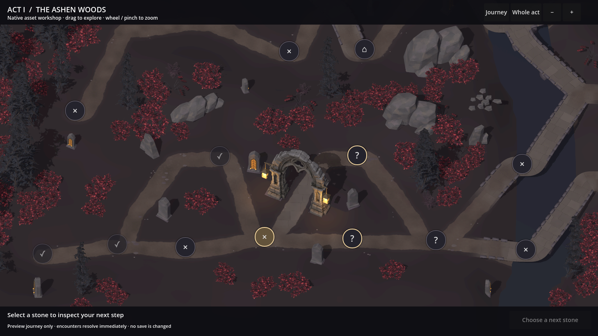
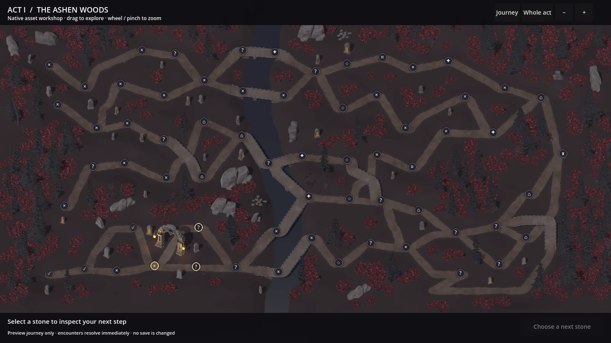
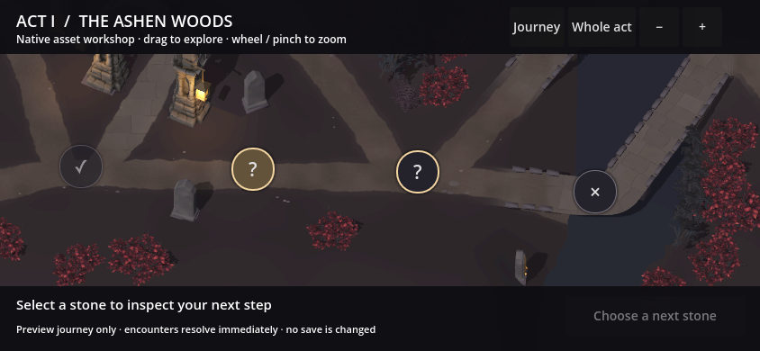
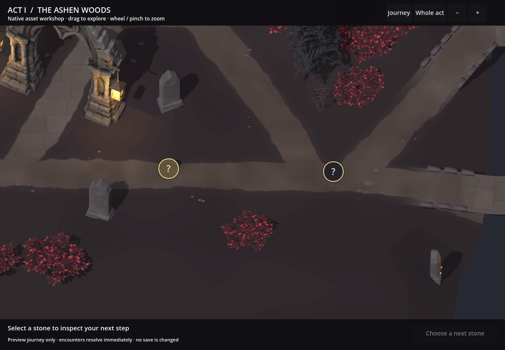
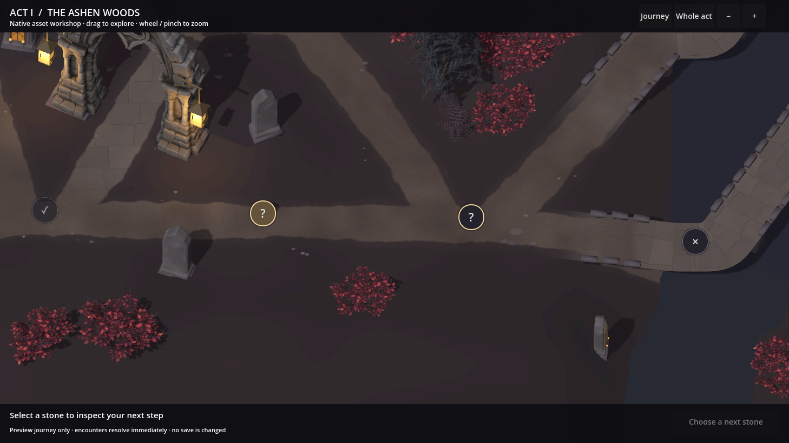

A continuous way through the woods.
Rebuilt bridge approaches and raised crossings meet the land gradually. The earth paths have clearer worn edges, quieter surface variation and scattered slate and leaf detail.
The woodland composition and all twelve natural model types are retained. This review focuses on the roads.
Inspect the same places, before and after.
Choose a location, then switch versions. Each pair uses exactly the same native camera framing. Open the image for full resolution.
Stone surfaces continue down the bank into the earth path. Joined landings and rounded deck edges replace the abrupt floating ends.
{kind=link}

Continuous approaches
Bridgeheads follow the ground into the bank. Raised routes have joined sloping and level surfaces, with open entrances at connected paths.
Worn earth and stone
Restrained soil variation, embedded slate remnants and loose fragments break up the uniform road surface. Stonework wears into earth at the ends.
A woodland edge
Irregular shoulders and small groups of fallen leaves connect the route to nearby vegetation. Large canopies, shrubs and landmarks retain their placement.
At the closest journey zoom.
These are additional native close-ups at the camera's closest interactive zoom, without review markers or image retouching.



The roads within the whole setting.
The same generated layout still supplies all 65 nodes and 76 connections. The six newer woodland forms remain among the original full trees and shrubs.

View the complete generated act

Checks behind this revision
The earlier mesh produced 35 excessive height changes in a new route-contact check. The revised surface passes the same 18,297 land, ramp and deck probes. All 1,659 bridge centre and shoulder probes and all 3,858 earth-route coverage samples pass. Additional joined-branch, sloping-bend and closed-loop cases check for holes, duplicate faces and invalid triangles.
Phone, pad and desktop reference dimensions pass drag, wheel zoom, node selection and legal preview travel. These are native desktop renders at the reference dimensions, not physical-device performance qualification.
{kind=link}

{kind=link}

{kind=link}
